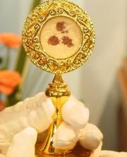

The 1310 Eucharistic Miracle of Fiecht occurred at the St. Georgenberg-Fiecht Abbey in Austria. During Mass, a priest struggling with doubt saw the consecrated wine transform into boiling, bubbling blood that overflowed the chalice.
Official Inquiry: Due to a massive influx of pilgrims, Bishop Georg von Brixen ordered an official investigation in 1472.
Declaration: After interviewing witnesses and examining the evidence, the church officially declared the miracle authentic and encouraged devotion.
Documentation: The miracle of Fiecht is included in the globally recognized catalog of Eucharistic miracles compiled by Blessed Carlo Acutis.